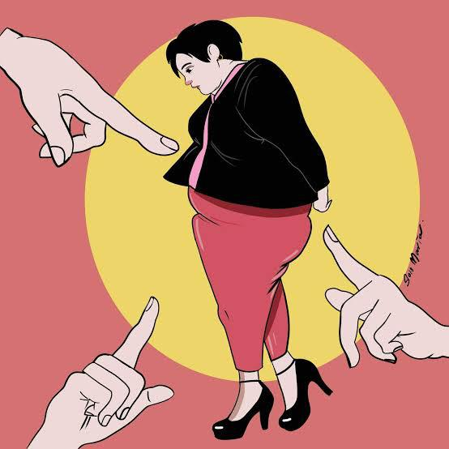

Jornalista Flávia Durante
A jornalista santista conta que começou a engordar depois da faculdade e, ao longo de dez
anos, ganhou 30 quilos. Mesmo bem resolvida com seu corpo, ela tinha dificuldade em encontrar roupas do
seu agrado na pouca oferta do mercado. “Não deixei de fazer as coisas por ter engordado. Ia à praia,
usava biquíni normalmente. O problema era encontrar peças que me servissem”, conta. Foi ali que viu que
a exclusão sofrida pelos gordos não se limita a uma rejeição social, o próprio mercado propaga isso
quando as marcas não querem ver seus produtos em corpos gordos, ainda que eles sejam uma parcela grande
dos consumidores. Cansada da falta de opção e dos padrões extremamente excludentes do universo da moda,
Flávia criou a Pop Plus Size.
Frequentadora da loja Pop Plus, Patrícia
Uma das frequentadoras assíduas da Pop Plus é Patrícia, que hoje se sente muito bem com o próprio
corpo, mas cita anos de terapia e a entrada para um grupo de teatro como iniciativas que a ajudaram a
gostar de si mesma. Na adolescência e na infância, ela sofreu bullying por ser gorda, e a ignorância e o
preconceito se manifestaram de diversas formas ao longo de sua vida: foi rejeitada pelas companheiras do
time de vôlei, teve um relacionamento com uma pessoa que não se deixava ser vista em público ao seu lado
e chegou a ouvir em uma entrevista de emprego para uma loja que não deveria nem se esforçar, porque não
haveria uniforme do tamanho dela. “No meu trabalho atual, reparam e comentam sobre tudo que eu como”,
conta. “Estou mudando a alimentação por questões pessoais e vejo que as pessoas ficam surpresas quando
me veem comendo vegetais. Já partem do princípio de que é porque quero emagrecer, me dão parabéns. E não
é.”
Influenciadora Pati Quental
a influenciadora revelou que levou um susto quando soube que sua foto estava no perfil do humorista Léo
Lins em tom de deboche e com uma série de comentários ofensivos. “Eu me senti violada, invadida e
impotente, como se não tivesse controle da situação. Foi uma exposição gratuita e violenta. Estavam me
ridicularizando, me xingando e dizendo que eu merecia ouvir certas atrocidades por ser gorda”, relembra.
Esse não foi o primeiro caso de gordofobia envolvendo o humorista. Leonardo também foi o responsável
pela publicação da foto da modelo Bia Gremion com frases ofensivas em relação ao corpo dela no mês
passado.
Leia mais em:
Capricho.com
